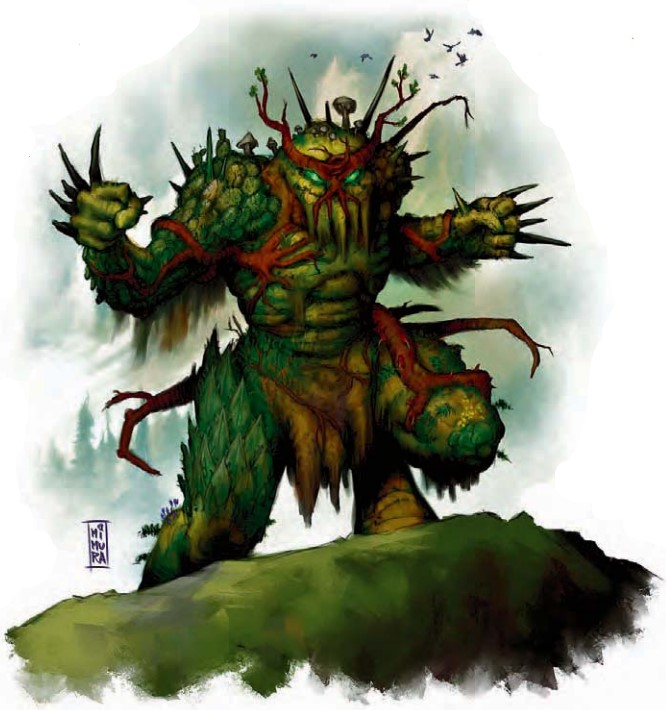

这种生物似乎是一个有着人形状的大概有食人魔那么大的大型植物。它的身上有恶心的尖刺与晶莹的琥珀色粘稠汁液，还有一双扭动的触手藤蔓从它的臀部延伸出来。
| 资料栏位 | 愤怒荆棘 (Briarvex) 大型植物 |
|---|---|
| 生命骰 | 8d8+32(68HP) |
| 先攻 | +0 |
| 速度 | 30尺 (6格) |
| 防御等级 | 19 (-1体型，+10天生)，接触9，措手不及19 |
| 基本攻击/擒抱 | +6/+17 |
| 攻击 | 近战 刺拳+12(2D6+7加上钻洞针) |
| 全力攻击 | 近战 2刺拳+12(2D6+7加上钻洞针) |
| 面宽/触及 | 10尺/10尺 |
| 特殊攻击 | 钻洞针，纠缠术 |
| 特殊能力 | 昏暗视觉，精通林地穿行，DR 5/挥砍，畏火，植物特性 |
| 豁免 | 强韧+10，反射+7，意志+3 |
| 属性 | 力量25，敏捷10，体质19，智力11，感知12，魅力11 |
| 技能 | 躲藏+1*，聆听+7，侦察+7，生存+6 |
| 专长 | 增强天武（刺拳），钢铁意志，猛力攻击 |
| 环境 | 见后文（未翻） |
| 组织 | 见后文（未翻） |
| 挑战等级 | 6 |
| 宝物 | 标准 |
| 阵营 | 总是守序邪恶 |
| 进化 | 9-12HD (大型)；13-25HD（超大型）或者随人物等级：德鲁伊提升 |
| 等级调整 | ― |
描述愤怒荆棘使用通用语和木族语。
战斗精通林地穿行（Improved Woodland Stride）（EX）：愤怒荆棘能以正常速度在任何种类的灌丛中穿行，而不会受到任何伤害或其它任何损伤，哪怕这些灌丛是由魔法生成的。
穿洞针(Thorn Burrow)（SU）：一只愤怒荆棘的刺拳攻击造成穿刺伤害和钝击伤害。每次愤怒荆棘用它的刺拳击中一个对手时，一些刺会折断刺入被攻击者的身体。以一个迅捷动作，愤怒荆棘能使刺入身体内的尖刺扭曲并钻入它的体内，这会造成3D6的穿刺伤害；伤害减免此时可以起效。这个能力的目标必须在距离愤怒荆棘100尺以内的范围内。愤怒荆棘和目标之间也必须有效果线。一个生物能够以一个标准动作取出刺。
纠缠术(Entangle)（SU）：如同纠缠术；随意使用；DC18；施法者等级8
技能：愤怒荆棘在森林中进行躲藏检定时可获得+16的种族加值。
愤怒荆棘是一种凶残、具有侵略性的植物生物，栖息于原始森林、茂密沼泽以及其他植物丛生的地区。愤怒荆棘能够操控植物，从而缠住敌人，或者用带刺的荆棘穿刺对手，这些棘刺会活化并钻入血肉之中。这种生物通常被称为"藤蔓食人魔"。
战术与策略愤怒荆棘数量有限，它们主要关注自身的生存与繁衍。它们试图用自己的后代在森林地带扎根，通过迁移到新区域来扩大影响力和控制范围。
遭遇其他生物时，愤怒荆棘会先躲藏起来评估可能的威胁。它们尤其警惕携带火源的入侵者。通常它们只攻击看起来比自己弱小的生物，并且喜欢突袭。
愤怒荆棘战斗时，先用纠缠能力困住对手，然后接近进入近战范围；它自身不受纠缠效果影响。面对强敌时，愤怒荆棘会争取时间等待援军。它首先尝试威吓对手（通常会谎报同伴的数量），若失败则转而哀求。战斗是最后的手段。
愤怒荆棘憎恨树精（树精也憎恨它们），一见面就会攻击。它们视树精为争夺森林控制权的最强大竞争对手，并会尽可能消灭这些林地近亲。一如既往，它们会以优势姿态行事，在发动攻击前先集结更多数量。
遭遇范例愤怒荆棘喜欢与同类群居，通常以2到4只为一群从一个森林区域迁移到另一个森林区域，沿途播撒自己的种子。偶尔能单独遇到强大的个体，尤其是那些投身于德鲁伊技艺的。邪恶的愤怒荆棘德鲁伊会积极巡逻自己的领地，驱赶或杀死所有非植物生物。
单独遭遇（EL 6）：一只愤怒荆棘藏在旅行者常使用的营地附近的树丛中。它耐心等待，直到队伍抵达并准备过夜。然后它悄悄靠近营地，攻击最近处正在睡觉的旅行者，同时使用纠缠能力阻止任何哨兵干涉。如果旅行者明显携带贵重物品或财宝，愤怒荆棘会持续攻击，尽可能多地进行抢夺。
成对遭遇（EL 8）：一对愤怒荆棘构成可怕的组合。其中一只每轮使用纠缠能力锁定敌人，另一只则进入近战，将被困住的生物撕成碎片。
生态学愤怒荆棘只求繁衍后代，它们将种子散布到任何适宜生长的土壤区域。它们将其他所有生物――尤其是树人――视为对其生存构成威胁的潜在威胁。面对更强的生物时，愤怒荆棘可能会尝试通过外交手段来应对，同时努力使自己的数量迅速增长至无法遏制的程度。然而，它们会强行将较弱的生物从它们所占据的区域驱逐出去。极少数愤怒荆棘曾试图与附近生活的其他生物建立和平关系，尤其是豺狼人，但大多数愤怒荆棘认为这些"低等生物"只是适合充当肥料的"杂草"，根本不值得重视。
一棵刚刚发芽的荆棘藤苗在出生后的头两年里处于休眠状态，深深扎根于土壤之中，看起来就像一株巨大的、枝干扭曲的灌木。一旦它完全成熟，就会苏醒过来，拔掉根部，然后走向外面的世界。
愤怒荆棘能够大量"播种"繁育同类，不过过度种植会严重消耗土壤和地下水的承载力。然而，在土壤肥沃、雨水丰沛的地区，它们的数量会急剧增长，最终酿成灾难。据历史记载，至少有两次，愤怒荆棘在一年内成功在某个对周边荒野巡逻松懈的城市附近种下了近千个同类。两年之后，这座不幸的城市便发现自己遭到了大群这种怪物的围攻。
环境荆棘魔会寻找大型森林中最阴暗的角落，在那里它们自身的显著特征不那么容易被发现。一旦找到合适的地点，它们会清出一片林冠区域以便接触日光，但整个过程会尽可能不引人注目。了解荆棘魔的贤者和德鲁伊相信，它们最初起源于巴托九狱的某处，但在某个时间点被整体传送到了现世的国度。
典型外貌特征成年荆棘魔身高在9到12英尺之间，体重可达1500磅。它们不需要进食，但需要可靠的水源和日晒。
阵营荆棘魔几乎总是中立邪恶。那些更年老、更强大的个体会随着年龄增长而变得愈发恶毒，倾向转化为混乱邪恶。
典型的宝藏愤怒荆棘天生喜爱闪亮的宝石和金币。它们会将这类物品编入自己的荆棘与藤蔓中，作为过往胜利的战利品展示。一只愤怒荆棘的宝藏按挑战等级计算为标准水平，大约价值2000金币。
拥有职业等级的愤怒荆棘愤怒荆棘通常不适合作为玩家角色，但其中一些会学习德鲁伊法术。愤怒荆棘德鲁伊通常会成为族群的首领，也有少数会选择独自闯荡。等级调整：+4
愤怒荆棘在艾伯伦没人确切知道愤怒荆棘是何时出现在科瓦雷的，不过最后战争结束后不久，便开始有成群的这种生物从哀伤故地游荡而出。它们的迁移似乎遵循某种模式，但这些模式的意义尚不明确。也许古老的种族和巨人知道，但他们不愿透露。与此同时，巨龙们正在研究这条编织于预言织物中的新线索。
愤怒荆棘在费伦这些生物自发地出现在至高森林中，几乎同时也在楚尔特的丛林中现身。对愤怒荆棘迁徙模式感兴趣的学者与贤者们正资助探险队前往观察它们。到目前为止，没有人报告过关于这些奇怪新生物的可靠信息。